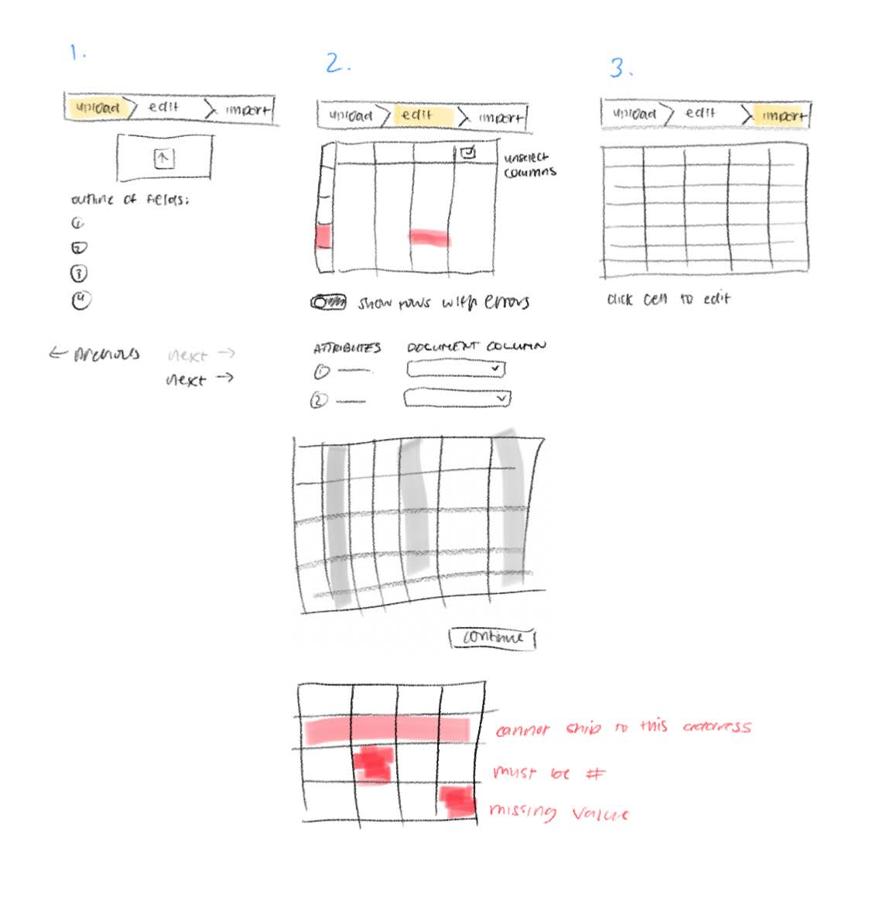
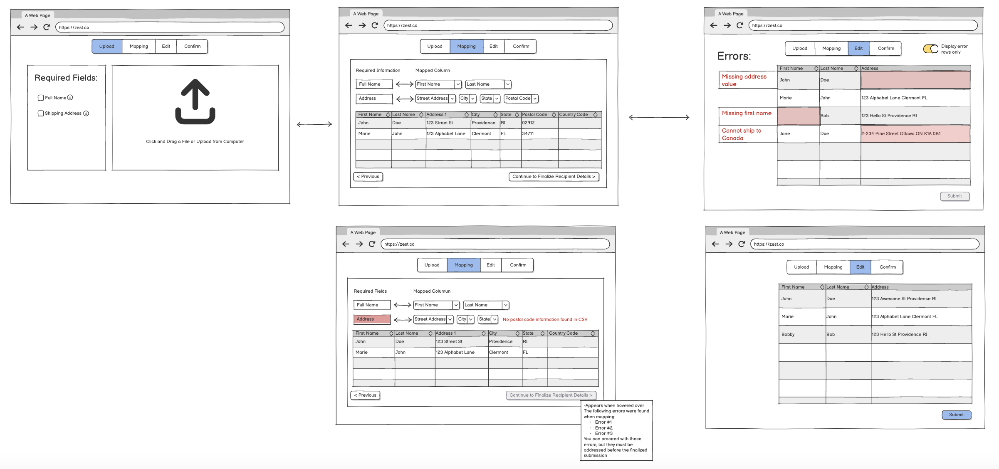

Role
UX Designer
UI Designer
Project Manager
Skills
Wireframing
Prototyping
User Research
Iterative Design
Team
4 UX/UI Designers
1 Project Stakeholder
Tools
Balsamiq
Figma
Loom
Introduction
All design is iterative. Whether working within a group, for a customer, making a web interface, or a rocket engine, success necessitates openness to change and diverse perspectives. As part of Brown University's CSCI 1300: Interaction Design course, I worked with three classmates to design for Zest, a corporate gifting platform. Our task was to design a new interface for large-scale uploads of recipient information. From developing initial concepts within our group to showcasing our final mockup feature, we leveraged multiple opportunities for feedback and revision to create a more robust and polished feature. Here was our iterative process.
The Problem Statement
We communicated directly with Christine Pun, Zest's lead UI Designer to establish a solid understanding of Zest's current problem.
Zest's current interface for CSV uploading was too restrictive, frustrating customers and limiting businesses' ability to customize their interface. We were tasked with creating an interface that could accommodate a diverse set of inputs while streamlining the whole process for the customer.
Step 1: Initial Concepting
Once we had a clear idea of the problem we were trying to solve, each member of our team sketched out a series of screens representing four unique implementations of the feature. None of us communicated during this process, and we didn't look at Zest's current interface. The purpose of this step was to generate fresh ideas.
Concept #1:
The first set of sketches represent four main steps. First, the user selects how they would like to enter the recipient info. After following the instructions to upload a CSV (should they choose that option), they are taken to a page which informs them of all required fields. If they choose to continue, a loading screen updates them on the status of their upload.
Key Features:
- Presents the user with alternatives to CSV upload
- Option to download CSV template
- Provides clear instructions to the user at each step of the process
- Clear distinction between required and optional fields
- Visual updates keep the user engaged during down-time
Concept #2:
In the second set of sketches, three main steps comprise the feature:
- First, the user may choose to upload a CSV or add recipients manually.
- After uploading a CSV, they see the field mappings and can fix any errors that appear.
- Finally they see a finalized recipients list after submitting.
Key Features:
- Presents the user with alternatives to CSV upload
- Option to download CSV template
- Original CSV rendered in-window
- Visualization of mapping from user-supplied columns to required fields (First & Last → Full Name)
- Errors displayed on the side; counter for number of errors remaining
- User must fix all errors before continuing
Concept #3:
The third set of sketches follows a similar process as the second:
- The first screen provides users with an area to upload their CSV.
- The second presents errors and an interface for interpreting and resolving them.
- Finally, they can see their original CSV displayed with no errors before submitting.
Key Features:
- Progress bar at the top to keep user informed
- Field checklist for CSV upload visible before uploading
- Highlights on errors in rendered CSV
- Option to only show rows with errors
- Dropdown-based visualization of content mapping
- Visual representation of unused columns ("unselect columns")
Concept #4:
The fourth set of sketches also follows a similar set of steps:
- On the first screen, the user uploads their CSV.
- Next, they are taken to a page which renders their original CSV with errors displayed.
- The user can click on the CSV to open a new page with an enlarged and editable rendering of their CSV, where they can fix errors.
Key Features:
- Large field for uploading CSV
- Loading icon to track upload progress
- Errors displayed to the side of rendered CSV
- Error cells in CSV highlighted red
- Clicking on CSV opens new window for editing
Step 2: Combining Our Ideas
Once all four of us had come up with unique implementations of the feature, it was time to combine them into one unified wireframe. The purpose of this step was to take the best ideas from each of our concepts and build a prototype using them. Using four independently-created concepts allowed us to identify which features we had converged on, while also prompting us to investigate areas where our implementations differed. The result (shown below) was a prototype where each feature had been weighed against alternatives—a much more robust first draft than any one of us could have created alone.
The Wireframe
In our finalized wireframe prototype, made using Balsamiq, the feature is broken up into three main screens. The first displays information about required fields and prompts the user to upload their CSV in the upload field. Once uploaded, the CSV is rendered in-window along with a visual representation of the field mappings and warnings about any major (column-wide) errors detected. This allows major errors to be fixed, and incorrect field mappings to be corrected, before moving on to finer-grained error handling. The final screen allows users to fix cell-specific errors before submitting their finalized list.
The wireframe combines features from all four of our initial concepts. Here are the features we kept from each:
Concept #1:
- List of required fields (helps reduce trial and error, clarifies the process without being restrictive)
- Large window for CSV uploading (showcases CSV functionality and makes it easy to drag files in)
Concept #2:
- CSV fully rendered in-window so user can see field mappings on their original import
- Error messages displayed to the side of each row (gives users explicit direction for fixing errors)
- Cells in rendered CSV are editable (reduces need to reupload, a major pain-point in the original)
Concept #3:
- Top progress bar (keeps users informed/confident throughout the process)
- Red highlights on errors for enhanced visual communication
- Option to only view error rows (improves useability and accessibility by reducing visual clutter)
- Dropdowns for changing field mappings (gives users flexibility without necessitating complexity)
Concept #4:
- Separate pages for viewing uploaded CSV and editing errors (clear flow reduces cognitive load)
New features:
- Forward/backward navigation buttons at the bottom of each page
- Error fixing page collates user fields into required fields (clearer representation of what's required)
- Vertical and horizontal scrolling on spreadsheet displays
Step 3: Initial Feedback
After completing our wireframe, we received feedback on it from a Teaching Assistant for our class. Below are some of the main points of feedback we received.
- Page titles (in concert with progress bar) could help clarify the purpose of each page
- Adding a "reupload" button to the rendered-CSV page would eliminate redundant clicks
- Moving error messages from the side to a popup in each cell would make the UI more informative and fix formatting issues with multiple errors on one row
- Add back button to error-editing page for consistency
- Progress bar looked a too interactive/button like
- Add clarification to each item in the "required fields" list for more specificity
Having a novice user look over our prototype webpage was invaluable for discovering where our feature was unclear or lacking functionality. It gave us a clear direction for the next phase of our work: creating a more polished mockup of our feature.
Step 4: High-Fi Prototype
We developed our final prototype using Figma, which allowed us to model the interactions we expected users to perform. The combination of feedback and enhanced modeling enabled us to anticipate the pros and cons of each choice more accurately. Our final prototype closely resembles our original wireframe, incorporating several minor changes that enhance its functionality, usability, and accessibility.
Below are some key changes we made between our original wireframe and our polished prototype.
- Included hoverable information icons next to each item in the "required fields" list (this will explicitly state the required columns for the user)
- Modernized our color scheme for the website using Zest's colors (the color scheme will be adapted to fit other company's scheme)
- Moving the error messages to be within each erroneous cell of our CSV (this allows the user to target erroneous cells correctly and with ease )
- Made the styling and messages of navigation buttons consistent across each page (this will clear some confusion as the user navigates from page to page)
- Made our progress bar look less like a button and more like a timeline (this will allow the user to understand where they are in the workflow without confusion)
- Added a confirmation and celebration page to our workflow (this will guide the user through the last steps of uploading their CSV)
Final Feedback
Once we had completed our hi-fi prototype, we sent it to Zest for a final round of retrospective feedback. Below are some of the key comments and takeaways from our meeting and the overall process.
Feedback from Christine
- Christine appreciated the features we included to make our interface easier to use. These included the toggle for error row visibility, the progress bar at the top, the editable cells in our rendered CSVs, and the information popups we included.
- Christine felt that our interface could benefit from giving more explicit feedback to users throughout the process. For example, on the mapping page, we could have included more explicit messages about what users could do to edit the mappings or correct significant errors.
- There were some quality-of-life features that would have benefited our interface. Having error rows float to the top automatically, adding an option to save progress or download an in-progress CSV, and adding options to import other spreadsheet formats would have made the overall user experience smoother and more flexible.
Conclusion
Throughout working on this design for Zest, we have gone through numerous rounds of feedback and redesigning certain aspects of our CSV uploading and mapping features. Here are some key lessons learned throughout our workflow:
Lessons Learned
- One strength was our streamlined interface that balanced simplicity with necessary guidance. With more time, we could have enhanced this with additional popup information and conditional feedback.
- While we received visual feedback, actual user testing would have been invaluable. Our limited resources reinforced the importance of all design stages—this initial mockup provides the foundation for future user testing.
- The project highlighted how various tools serve different development phases. Using Balsamiq for wireframing, Figma for detailed modeling, and Loom for sharing demonstrated how selecting appropriate tools for each stage improves efficiency and results.